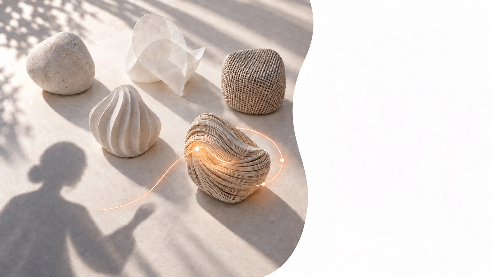
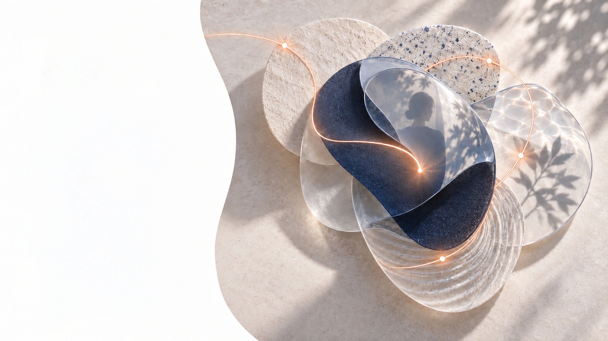

Feelings
come first.
Logic follows later.
Every decision starts with preference.
And every interaction
with how something makes us feel.
Emotion creates
connection.
People rarely connect with information alone.
They connect with how an experience makes them feel.
When emotion is present, people pay attention.
When they feel something meaningful,
they remember the moment—and the brand behind it.
- FEEL
- CONNECT
- REMEMBER
Memory shapes
preference.
What stays with people influences what they choose.
Emotion leaves traces that logic alone cannot.
A brand becomes stronger when moments are memorable.
The experiences people recall most clearly often become
the reasons they return, recommend, and prefer.
- NOTICE
- FEEL
- REMEMBER
- PREFER
First impressions
begin early.
People sense a brand before they fully understand it.
Atmosphere speaks before words do.
Tone, environment, and small sensory cues shape the mood of an interaction instantly. By the time someone begins to think, the experience has already started.
- SEE
- SENSE
- FEEL
- INTERPRET
Comfort builds
trust.
When people feel at ease, they are more open to the brand.
Ease is one of the first signals of trust.
A thoughtful experience lowers resistance.
It makes people stay longer, engage more naturally,
and feel confident in what the brand is offering.
- COMFORT
- OPENNESS
- TRUST
- ENGAGE
Atmosphere guides
behavior.
The mood of a space quietly shapes what people do next.
Experience influences action.
People move differently, browse differently,
and interact differently depending on how a place feels.
A well-shaped atmosphere encourages attention,
comfort, and natural engagement.
- ARRIVE
- EXPLORE
- ENGAGE
- ACT

Feeling becomes
choice.
What feels right is often what people choose.
Preference is emotional before it is rationalized.
People may explain decisions with logic,
but preference often begins with subtle emotional signals. The brands that feel right become easier to choose—and easier to choose again.
- FEEL
- PREFER
- CHOOSE
- RETURN

Before a brand
is understood,
it is felt.
Experience begins long before evaluation.
This is where stronger brands begin.
What people feel shapes what they notice,
what they remember, and what they choose.
That is why experience is not decoration
around a brand. It is part of the brand itself.
- FEEL
- NOTICE
- REMEMBER
- CHOOSE